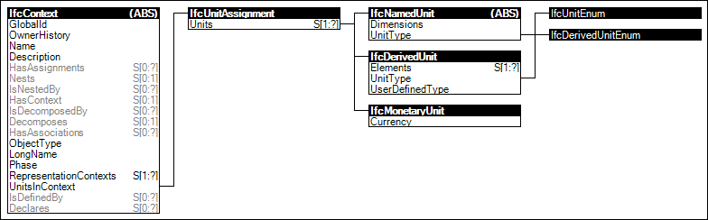

4.1.2 Project Units
The project context includes the definition of the default units within the IFC data set. Default units are
those units that apply:
- to all geometric representation items within the geometric representation contexts;
- to all attributes with a defined datatype indicating a measure datatype;
- to all properties and quantities with a defined datatype indicating a measure datatype and with
no local unit definitions provided.
Figure 4 illustrates an instance diagram.
 |
Figure 4 — Project Units |
 Link to this page
Link to this page